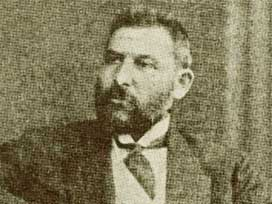

Abdullah Cevdet (1869-1932)

1869'da Arapkir'de doðdu. Ýlköðrenimini Arapkir ve Hozat'ta yaptý. Elazýð Rüþdiye mektebini bitirdikten sonra, Kuleli Askeri Týbbiye Ýdadisi'ne, akabinde Mekteb-i Týbbiye'ye kaydýný yaptýrdý. Kendi ifadesine göre, ailesindeki dini eðilim kuvvetli olan, þiirlerinin bir kýsmýný dini hislerle yazan ve ilk zamanlarda arkadaþlarý arasýnda dini vecibelerini yerine getiren ve böyle tanýnan biri iken, gördüðü eðitimin etkisiyle materyalist felsefeyi benimsedi.Abdullah Cevdet, fikri yapýsýnda materyalist felsefenin etkisinde kalýp, bu yöndeki Batýlý felsefecilerin eserleriyle yoðruldu. Diðer taraftan on dokuzuncu yüzyýlýn sonlarýndan itibaren aktif bir þekilde siyasi faaliyetlerin içine girdi. Bilahare Ýttihad ve Terakki Cemiyeti adýný alacak olan Ýttihad-ý Osmani Cemiyetinin kurucularý arasýnda yer aldý (1889). Öðrenciliðinden itibaren siyasi faaliyetler içinde bulunduktan sonra, geçici görevlerle bulunduðu Diyarbakýr ve Adapazarý'nda da bu çalýþmalarýný devam ettirdi. Tutuklanýp Fizan'a gönderilmek üzere iken, Paris'e kaçtý (1897).
Paris'te Jöntürklerle birlikte hareket eden Abdullah Cevdet, makaleler yoluyla fikirlerini yazmaya devam etti. Burada para sýkýntýsý çekmeye baþlayýnca, sarayla anlaþarak geri döndü. Kendisine aylýk baðlandý, ancak siyasi faaliyetlerini devam ettirince maaþý kesildi. Akabinde Viyana sefareti doktorluðuna atandý. Burada da sefirle arasý açýlýnca Avusturya'dan sýnýrdýþý edildi. 1904 yýlýndan itibaren Cenevre'de "Ýçtihad" dergisini yayýnlamaya baþladý. Cenevre'de Osmanlý Ýttihad ve Ýnkýlab Cemiyeti'ni kurdu ve Osmanlý Gazetesi'ni yayýnlamaya baþladý. Gazetedeki yazýlarýný imzasýz yayýnladý. Gazetede; Ýslamiyet'in etkisini koruduðu yerlerde duraklamanýn olduðu, Ýslam medeniyetinin uyuþturucu bir rol oynadýðý þeklindeki iddialar, dolaylý olarak yayýnlanmaya baþlandý (Þerif Mardin, Jön Türklerin Siyasi Fikirleri, Ýstanbul 1992, s. 161). Kendi basýmevinde Padiþah aleyhindeki bir eseri basmasý ve Osmanlý Devletinin þikayeti üzerine buradan da sýnýrdýþý edildi. Bunun üzerine Kahire'ye geçerek yayýnlarýna burada devam etti.
Abdullah Cevdet'in Ýttihad ve Terakki ile de arasý iyi olmadýðýndan, Meþrutiyetin ikinci kez ilan edilmesinden sonra hemen yurda dönemedi. Bu arada çok büyük tartýþmalara sebebiyet veren, Peygamber Efendimiz (asm) ve Ýslamiyet hakkýnda aðýr hakaretleri ihtiva eden, Reinhard Dozy'nin eserini Tarih-i Ýslamiyet adýyla Türkçe'ye tercüme etti. Çok büyük tepki çeken eser yasaklandý.
1911 yýlýnda ülkeye döndükten sonra, bir süreden beri ara verdiði Ýçtihad'ý tekrar yayýnlamaya baþladý. Diðer taraftan eser tercüme etmeye devam etti. Yayýnlarýnda kullanmýþ olduðu üslup ve dine karþý yaptýðý hakaretler sýk sýk þikayet konusu olduðundan, dergisi müteaddit defalar kapatýldý. Kapatmalar sýrasýnda deðiþik adlarla çýkmaya devam eden dergi, birkaç yýl yayýnýna ara verdikten sonra, 1918 yýlýndan itibaren tekrar yayýnlanmaya devam etti. Savaþ yýllarýnda Ýngiliz Muhipler Cemiyeti'nin kurucularý arasýnda yer alan Abdullah Cevdet'e, Cumhuriyetin ilanýndan sonra görev verilmesinde sakýnca görülmekle birlikte, yayýnlarýna her hangi bir engel çýkarýlmadý ve bu alandaki çalýþmalarýna devam etti.
Abdullah Cevdet, dergisinin 144. sayýsýnda (01.03.1922) yeni bir din olarak Bahailiðin kabul edilmesini teklif etti. Bu yazýdan ötürü hakkýnda açýlan davada iki yýl hapse mahkum edildiyse de uzun bir süreçten sonra cezasý temyizde bozuldu. Bu arada peygamberlere yapýlan hakaretlerle ilgili ceza maddesi kaldýrýlýnca (1926), davasý da düþmüþ oldu. Cumhuriyet döneminde kendini tamamen yayýn hayatýna vererek materyalist felsefeyi savunan eserler yayýnlamaya devam etti ve bu eserlerinin bir kýsmý devlet yayýný olarak basýldý. Ýstanbul'da 1932 yýlýnda öldü. Ölümünden sonra cenaze namazýnýn kýlýnýp kýlýnmamasý konusunda tartýþmalar yaþandý.
Abdullah Cevdet'in de okumuþ olduðu Týbbiye Mektebi, derslerin içeriðinin de etkisiyle büyük oranda materyalist felsefenin etkili olduðu okullar olarak Osmanlýnýn son dönemine damgasýný vurmuþ ve buradan yetiþenler söz konusu fikirleri daha geniþ alanlara yaymýþlardýr. Bu okullardan yetiþenler bir taraftan pozitivizmi ön plana çýkarýrken, diðer taraftan, biyolojik materyalizmi dinin yerine monte etmeye çalýþmýþlardýr (M. Þükrü Hanioðlu, Doktor Abdullah Cevdet ve Dönemi, Ýstanbul 1981, s. 401).
Avrupalýlaþma konusunda radikal fikirlere sahip olan Abdullah Cevdet, kendi zamanýna kadar gerçekleþenleri yeterli görmemektedir. Doðu ile Batý arasýndaki farký açýklarken; "... Avrupa bizim yaptýðýmýz gibi güneþin batmasýyla mesaisini terk etmiyor, yatmýyor. Avrupa'da tabiatýn güneþi batýnca insanlarýn güneþi doðuyor: elektrik... en büyük ve en daimi hasmýmýz bizim kendi kanýmýzdadýr, kendi kafamýzdýr. Bizim ile ecanib arasýndaki münasebat kavi ile zaif, alim ile cahil, zengin ile fakir arasýndaki münasebatdýr... bir ikinci medeniyet yoktur. Medeniyet Avrupa medeniyetidir. Bunu gülüyle, dikeniyle isticnas etmeye mecburuz..." (Hanioðlu, s. 359) görüþlerine yer vermektedir.
Abdullah Cevdet'in gerek Batýnýn, gerekse Rusya'nýn Müslümanlara ve Osmanlý Devleti'ne karþý izlediði politikalara bakýþý Ýttihadçýlardan farklýlýk arz ediyordu. Ona göre, Müslümanlarýn eziyet ve zülüm görmeleri Müslüman olmalarýndan dolayý deðil, cahil ve tembel olmalarýndan kaynaklanýyordu. Ýstanbul'daki hükümetlerin cebir ve hakaretleri Ruslarýn yaptýklarýndan daha az deðildi. Zorla Rusça'nýn öðretilmesi de pek o kadar kötü deðildi. Daha önce dil bilmediklerinden önlerine gelen evraklarý imzalýyorlardý. Rusça öðrenerek, bilmedikleri evraklarý imzalamaktan kurtulacaklardý. Rusya'nýn egemenliði altýnda bulundurduðu Müslümanlardan zorla asker toplayarak bunlarla Osmanlý Devleti'nin üzerine yürümesinin, Halife denilen Abdülhamid'in yaptýklarýndan daha beter olmadýðýný savunacak kadar sert eleþtirilerde bulundu (Þerif Mardin, Jön Türklerin Siyesi Fikirleri, s. 233-234).
Abdullah Cevdet, her ne kadar milletvekili olamadýysa da, önceki döneme oranla Cumhuriyet döneminde, materyalist fikirlerini çok daha rahat bir biçimde sergilemeye devam etti. Bir taraftan din büyüklerine hakaretin suç olmaktan çýkarýlmasý, diðer taraftan yayýnlarýndan bir kýsmýnýn devlet tarafýndan desteklenmesi, cesaretini daha da arttýrdý. Bundan sonra, dinin toplumsal geliþmeye engel teþkil ettiðini açýk bir þekilde yazmaya baþladý. O, Ýslam dünyasýnýn geri kalmasýnýn diðer sebeplerini bildiðini ileri sürdükten sonra, ama bunlardan hiç birinin dini sebepler kadar, gerileme ve tahripte etkili olmadýklarýný iddia etti (Hanioðlu, s. 389).
Abdullah Cevdet'in fikirleri ve din hakkýnda ileri sürdükleri görüþler, dinde reform yapma iddiasýnda bulunanlara büyük bir dayanak teþkil etti. Yazýlarý ve görüþleri, basýnda cereyan eden dinde reform taleplerini önemli ölçüde arttýrdý. Gerçek niyetler gizlenerek, dinde reform ve Türkçe ibadet adý altýnda, gizli din aleyhtarlarýnýn faaliyetleri günümüze kadar devam etti.
Tek Parti döneminde dine her türlü hakareti yapan, eleþtiren ve hatta Müslümanlarý tahkir eden Abdullah Cevdet'e iliþilmezken, Bediüzzaman Hazretlerinin yaptýðý iman hizmetinin engellenebilmesi için her yola baþvuruldu. Birileri, her türlü hakareti yaparken hiçbir takibata ve engellemelere maruz kalmadýlar. Eserleri serbest bir þekilde elden ele dolaþtý. Devlet desteði gördü. Kütüphanelere yerleþtirildi. Diðer taraftan, ilerlemiþ yaþýna raðmen Bediüzzaman Said Nursî, yýllarca hapis yatarken geri kalan ömrünü sürgünlerde geçirdi. Bediüzzaman, bu iki yüzlü uygulamayý eleþtirirken Abdullah Cevdet'i ve tercüme ettiði Doktor Dozy'nin eserini örnek göstererek haksýzlýðý dile getirmektedir:
"Risâle-i Nur'u okumuþ veya okutmuþ veya yazmýþ diye suçlu sayýp, mahkemeye vermek ne kadar adaletin mahiyetinden uzak olduðunun katî bir hücceti þudur ki: Kur'an aleyhinde yazýlan Doktor Duzi'nin ve sair zýndýklarýn o muzýr eserlerini okuyanlara, 'hürriyet-i fikir ve hürriyet-i ilmiye' düsturuyla, bir suç sayýlmadýðý halde; hakîkat-i Kur'aniyeyi ve îmaniyeyi öðrenmeye gayet muhtaç ve müþtak olanlara, güneþ gibi bildiren Risâle-i Nur'u okumak ve yazmak bir suç sayýlmýþ." (Tarihçe-i Hayat, s. 355)
Doktor Abdullah Cevdet'in dinsizce hücumlarýna karþý yazdýðý bir-iki Risâle ve bazý memurlarýn insafsýzcasýna ve gaddarane tecavüzlerine karþý þekva sûretinde kaleme aldýðý iki küçük Risâle nedeniyle baskýya maruz kalan (Tarihçe-i Hayat, s. 217) Bediüzzaman, hem müdafaa hem de ikazda bulunmaktadýr: "Doktor Duzi'nin ve sair zýndýklarýn eserlerine iliþmemek, Risâle-i Nur'a iliþmek, gazab-ý Ýlahi'nin celbine bir vesile olabilir diye korkuyoruz. Cenab-ý Hakk size insaf ve merhamet ve bize de sabýr ve tahammül ihsan eylesin."(Emirdað Lâhikasý, s. 22) "Acaba, mahkeme-i kübrada, bu üç yüz milyar davacýlarýn karþýsýnda sizden sorulsa ki: "Doktor Duzi'nin, baþtan nihayete kadar serapa Ýslamiyet'iniz ve vatanýnýz ve dîniniz aleyhinde ve Frenkçe Tarih-i Ýslam namýndaki eseri ki; zýndýklarýn kütüphanelerinizdeki eserlerine, kitaplarýna ve serbest okumalarýna ve o kitaplarýn þakirtleri, kanununuzca cemiyet þeklini almalarýyla beraber, dinsizlik veya komünistlik veya anarþistlik veya pek eski ifsad komitecilik gibi, siyasetinize muhalif cemiyetlerine iliþmiyordunuz. Neden hiçbir siyasetle alakalarý olmayan ve yalnýz îman ve Kur'an cadde-i kübrasýnda giden ve kendilerini ve vatandaþlarýný îdam-ý ebedîden ve haps-i münferidden kurtarmak için Kur'an'ýn hakîki tefsiri olan Risâle-i Nur gibi gayet hak ve hakîkat bir eseri okuyanlara ve hiçbir siyasî cemiyetle münasebeti olmayan o halis dindarlarýn birbiriyle uhrevî dostluk ve uhuvvetlerine cemiyet namý verip iliþmiþsiniz?" (Tarihçe-i Hayat, s. 363-364)